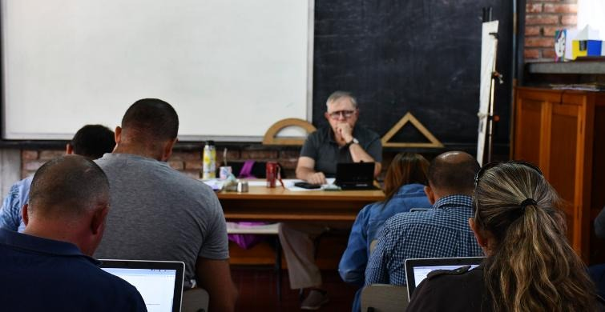

Lenguas
Idioma Español e Inglés.
“Nunca es tarde para volver a empezar.”
Animate a culminar Educación Media Básica en nuestra escuela técnica.
Una propuesta educativa para jóvenes y adultos que quieren acreditar la Educación Media Básica en 38 semanas y seguir estudiando en UTU o en Secundaria.
La inscripción se hace en los centros educativos donde existe la propuesta, con agenda previa.
Rumbo es una propuesta educativa de la Dirección General de Educación Técnico Profesional (DGETP-UTU, antes CETP-UTU) de la ANEP, creada en 2010, que permite acreditar la Educación Media Básica a personas jóvenes y adultas.
Su objetivo es posibilitar la continuidad educativa: quienes egresan pueden seguir estudiando en la Educación Media Superior, tanto en UTU como en Secundaria.
Dura 38 semanas (aproximadamente un año) y se organiza en tres módulos que alternan modalidad presencial y semipresencial.
2010–2026 | 16 años brindando oportunidades educativas

El Plan RUMBO nació en Uruguay en el año 2010, impulsado por la Universidad del Trabajo del Uruguay (UTU), con el objetivo de brindar una nueva oportunidad educativa a jóvenes y adultos que, por diferentes motivos, no habían podido finalizar la Educación Media Básica.
El programa surgió a partir de la experiencia de Acreditación de Saberes, que reconocía los conocimientos adquiridos a través del trabajo y de la vida. En sus comienzos funcionó en 10 escuelas técnicas y, con el paso de los años, fue creciendo y llegando a diferentes localidades del país.
Una de sus principales características es que permite culminar el Ciclo Básico en un año, mediante tres módulos que combinan clases presenciales y semipresenciales. De esta manera, facilita el estudio a personas que también tienen responsabilidades laborales y familiares.
En 2013 comenzó a extenderse al medio rural, acercando nuevas oportunidades educativas a más personas.
En 2026, el Plan RUMBO cumple 16 años de trayectoria. Continúa ofreciendo oportunidades para finalizar la Educación Media Básica y seguir estudiando. Además, UTU está trabajando en la revisión y actualización del programa para responder mejor a las necesidades de sus estudiantes.
Más allá de los conocimientos, RUMBO representa una oportunidad para recuperar la confianza, compartir experiencias, superar dificultades y demostrar que nunca es tarde para aprender.
Porque RUMBO no es solamente terminar un ciclo educativo: es volver a creer en uno mismo, descubrir nuevas capacidades y abrir las puertas a un futuro con más oportunidades.
Los nombres salen de los programas de Planeamiento Educativo de UTU. Informática se cursa y se certifica aparte de la Media Básica.
Idioma Español e Inglés.
Biología y Química.
Física y Matemática.
Ciencias Sociales y Arte.
Construcción de Ciudadanía, y Trabajo y Producción.
Uso de las herramientas de aprendizaje virtual. Según Uruguay Educa, es siempre presencial y con asistencia obligatoria, y se certifica aparte de la Media Básica.
Las fuentes oficiales no usan el mismo piso de edad. Estas son las tres condiciones que aparecen, y el caso concreto se confirma en UTU.
Uruguay Educa y el MIDES: con Primaria completa se puede ingresar desde los 21 años.
UTU y ANEP hablan de mayores de 18 con Primaria completa. Uruguay Educa, entre 18 y 21, pide un curso ya aprobado en UTU: Capacitación, Acreditación de Saberes o Formación Profesional.
Personas que acreditaron saberes por experiencia de vida o laboral. Lo mencionan UTU, ANEP y el MIDES.
Las fuentes no usan la misma edad. El MIDES incluye mayores de 17 años con un curso de Nivel 1 del CETP. UTU y ANEP parten de los 18. Uruguay Educa pide 21 si el único antecedente es Primaria. Confirmá tu caso con UTU antes de inscribirte.
Según la ficha de UTU: 13 semanas presenciales, 17 semipresenciales y 8 presenciales. Uruguay Educa describe la misma alternancia. Informática se cursa siempre de forma presencial, también en el módulo del medio. El calendario de cada centro se confirma en UTU.
Primera etapa, con asistencia presencial a clase en el centro.
PresencialRégimen semipresencial: trabajo a través de la plataforma y asistencia al centro cuando el estudiante lo necesita o el docente lo convoca.
SemipresencialVuelta a la asistencia presencial. Al aprobar este módulo se egresa de la Educación Media Básica.
PresencialLa inscripción se realiza en los centros educativos donde existe la propuesta, con agenda previa.
Confirmá con UTU si cumplís los requisitos y en qué centro se dicta Rumbo cerca tuyo (0800 8155 · 2410 7972).
Reservá día y hora en agenda.utu.edu.uy (abre en una pestaña nueva).
Usá la lista de documentación de abajo para no olvidarte de nada.
Concurrí al centro educativo el día agendado con toda la documentación.
Marcá cada documento a medida que lo vas juntando. Tu progreso se guarda en este navegador para que puedas volver más tarde.
La lista corresponde a la información publicada por ANEP. Confirmá con el centro educativo qué documentos aplican a tu caso.
La oferta cambia de un año a otro. Para saber si Rumbo se dicta cerca tuyo, llamá o reservá un lugar en la agenda.
En 2018, según Uruguay Educa (ANEP), Rumbo se ofrecía en 15 departamentos. Esa lista no confirma los centros de este año.
Departamentos en 2018
38 semanas, según la ficha de UTU: 13 presenciales, 17 semipresenciales y 8 presenciales. Uruguay Educa agrega hasta 3 semanas de período compensatorio si hace falta. Informática se cursa siempre presencial. El calendario de cada centro se confirma en UTU.
El objetivo del programa es acreditar la Educación Media Básica, lo que permite continuar estudios en Educación Media Superior (UTU o Secundaria). El curso incluye un componente de informática para usar las herramientas de aprendizaje virtual.
Rumbo permite continuar estudios en la Educación Media Superior: Educación Media Profesional o Tecnológica en UTU, o Bachillerato en Secundaria.
No necesariamente todos los días: el programa combina modalidad presencial y semipresencial a lo largo de los tres módulos. La asistencia concreta depende del centro y del módulo; consultá en UTU.
UTU y ANEP indican mayores de 18 años con Primaria completa, o personas que acreditaron saberes por experiencia. Uruguay Educa pide 21 años o más si el único antecedente es Primaria, y desde los 18 si ya aprobaste un curso en UTU. El MIDES también menciona mayores de 17 años con un curso de Nivel 1 del CETP. Confirmá tu caso en el centro.
En los centros educativos donde existe la propuesta, con agenda previa en agenda.utu.edu.uy. Llevá la documentación indicada en la checklist.
Es una propuesta de la ANEP, a cargo de la Dirección General de Educación Técnico Profesional (DGETP-UTU, antes CETP-UTU). Fue creada en 2010.
Catalina Díaz
Instagram: @Sky_rubiii (abre en una pestaña nueva)
Este video es público. Catalina Díaz, su autora, autorizó su publicación en este sitio. El prototipo no es autor del material y no se responsabiliza por su contenido, por las opiniones que expresa ni por el uso que otras personas hagan de él. La publicación se limita a mostrarlo con el permiso de quien lo creó.
Presentamos el registro fotográfico de Rumbo de la Escuela Técnica Colón y su Anexo Unidad 5. Las imágenes recorren la intervención artística «Un océano de esperanza», realizada en 2025 por estudiantes de Rumbo RE3, que funciona en el I.N.R. 5: medusas de papel que iluminan pasillos y salones, peces de origami, mensajes escritos a mano y los libros «La mochila invisible» y «De la cárcel a Rumbo».
Recorré las fotos con las flechas, deslizando el dedo o tocando una miniatura. Para verlas en grande, tocá la imagen.
Fotos: Rumbo – Escuela Técnica Colón y Anexo Unidad 5.
Para consultas sobre Rumbo, requisitos y centros donde se dicta.
San Salvador 1674, Primer Piso, Of. 30
Montevideo